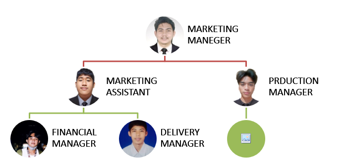

Business Overview
Jelly Ace is a popular jelly candy in the Philippines that has been enjoyed by Filipinos for generations. It was first introduced in the Philippines in the 1960s by the company General Milling Corporation, which was later acquired by Universal Robina Corporation (URC) in 2002.
The candy is designed like an ace playing card and is made of jelly, therefore the name "Jelly Ace." Orange, grape, pineapple, and strawberry were the original flavors of Jelly Ace. URC has added fresh tastes over the years, including mango, blueberry, and green apple.
Jelly Ace is frequently offered in tiny packets or in bulk and has grown to be a popular snack in the Philippines. As a garnish for ice cream, cakes, and other desserts, it is very frequently used. Even additional items like soda and instant beverages with the Jelly Ace flavor were inspired by the candy. Jelly Ace's sweet taste, unique texture, familiar flavors, nostalgia, and accessibility are some of the reasons why it has become a favorite among Filipinos. Gelaten Business is composed of jelly ace with a variety of flavors and condensed milk.
Although it is simple, it is very delicious and can capture the taste buds of the customers. It is also very affordable, and cold condensed jelly is very timely because it's summertime in the Philippines. That's why we are determined that every customer could not resist the freshness and the deliciousness of our product.
Business Name
A. Name of the Business
Our business name is Gela-ten. "Gela-ten" tells the main ingredient and the price of our product, which is Gelatin and Ten pesos in shot.
B. Business Location
The business is located inside Masbate National Comprehensive High School, Barangay Centro, Masbate City.
Target Market and Demographics
The target market of GelaTen will mainly be the students of MNCHS and the people residing in Masbate City.
Marketing Plan
The Gelatin Product is a cool refreshing Gelatin served with sweet condensed milk topped with crushed graham crackers on top. It is most enjoyable to eat on sunny or hot days. The goal of Gelatin is to satisfy our customer's cravings and help them keep cool during the summer here in Masbate.
- Gender – Any gender
- Age – 5 and above
- Income - ₱0 and above
- Occupation – Student, Teacher, etc.
- Education – Elementary school graduate, high school graduate, vocational education graduate, college graduate, and no formal schooling
- Religion – Any religion
- Ethnic group – Any ethnic group within scope
Competitive Analysis
As other students are also starting their own businesses, some of them may choose to focus on food-based businesses, particularly desserts. To establish a strong customer base from the outset, Gelatin aims to build positive customer relationships by implementing a robust marketing strategy, offering promotions, bundle pricing, and including freebies with their products. These efforts are intended to leave a lasting impression on customers and create a strong brand presence for Gelatin in the minds of consumers.
| Strengths | Weaknesses |
|---|---|
|
|
| Opportunities | Threats |
|---|---|
|
|
Operational Plan
| Materials | Cost | Source of Funds |
|---|---|---|
| Gelatin powder | 15 pesos/15g | Contribution |
| Sugar | 25 pesos | Contribution |
| Condensed milk | 30 pesos | Contribution |
| Cups | 40 pesos | Contribution |
| Plastic spoon | 20 pesos | Contribution |
Manpower:
As Gelatin is a corporate entity, it is anticipated that the human resources involved in the production of the product would come from within the business organization itself, using their invested resources.
Methods:
Ingredient Preparation - Gelatin, sugar and condensed milk a are measured and mixed according to the established recipe. Molding - The mixture is poured into jelly ace molds and allowed to set. Packaging - Once the jelly aces are fully set, they are removed from the molds and individually wrapped in plastic wrappers. Labeling - Each jelly ace is labeled with the brand name, flavor, and expiration date. Quality Control - Random samples of jelly aces are taken and inspected for quality, including taste, texture, and appearance. Mixing equipment - for mixing gelatin, sugar, flavorings, and food coloring. Molding equipment - for pouring and setting jelly Jelly Ace Operational Plan
Machinery:
The product will need the use of stove to cook the gelatin. We will use standard kitchen tools like a knife, whisk, spoon, can opener, and many more. To avoid accidents, proper precautions will be taken when handling these tools and equipment.
Financial Plan
The owners of the business each contribute 75 pesos, for a total of 300 pesos to fund the business. The money that the owners used in their business came from their parents, and some came from their efforts in order to run the business. Because of the financial support of the parents, the owner is inspired to thrive and make the business successful. The Necessities of the business will be met with the help of the money collected.
| Particulars/Items | W1 | W2 | W3 | W4 |
|---|---|---|---|---|
| Capital | 400 pesos | 670 pesos | 800 pesos | 1000 pesos |
| Expected Daily Sales | 650 pesos | 690 pesos | 900 pesos | 1100 pesos |
| Expected Daily Expenses | 380 pesos | 490 pesos | 550 pesos | 600 pesos |
| Income per Day | 270 pesos | 200 pesos | 450 pesos | 500 pesos |
Organizational Plan
The organizational structure of Gela-ten focuses on the business owners, as a corporation business, who will play the role of the financial manager, marketing manager, production manager, and service delivery person assigned.
